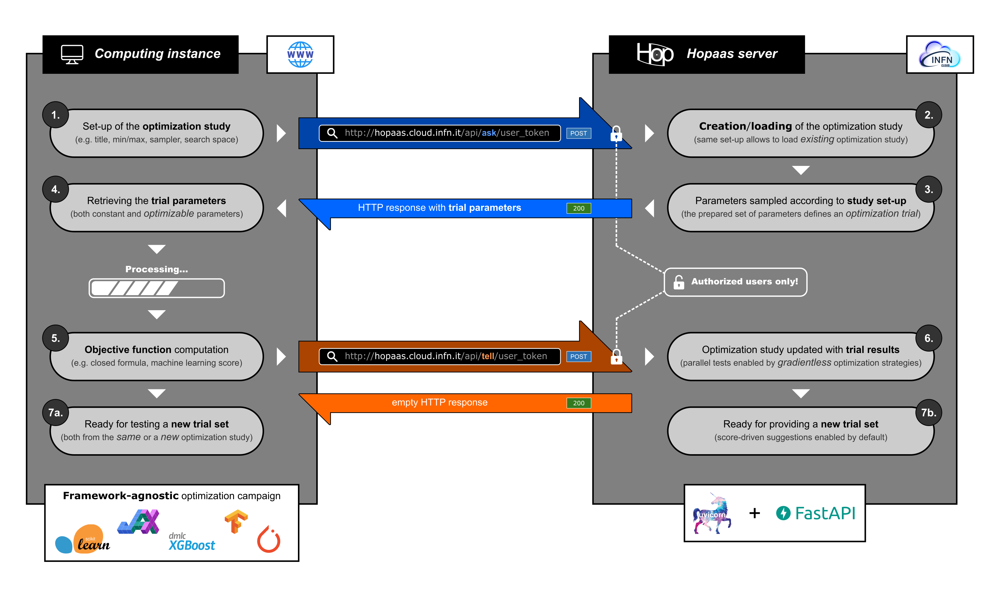
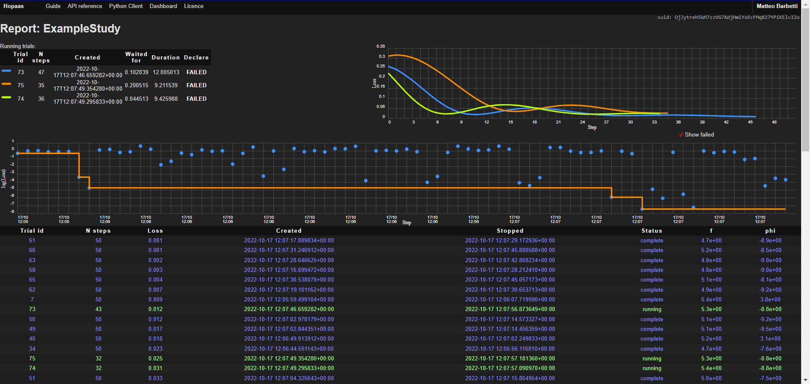

Hyperparameter optimization is a crucial step in the late development
of machine learning models to improve their performance. Optimization campaigns require
training the models multiple times, possibly in parallel, to explore the
hyperparameter space, focusing on those regions where the model performs better.
Accessing opportunistic resources can drastically increase the number of trials
in a campaign, especially when training involves the usage of GPUs. Diversity
in the computing environment of the resource providers and untrusted
storage solutions represent challenges to the existing services.
2. Hyperparameter optimization as a service
Hopaas (Hyperparameter OPtimization As A Service) is a service
hosted by INFN Cloud that allows to orchestrate
optimization studies across multiple computing instances via HTTP
requests. Hopaas provides a set of REST APIs and a web interface to enable
user authentication and to monitor the status of the user studies.
Accessing the Hopaas service is enabled through API tokens passed directly
within the URL of the HTTP requests. Such tokens can be generated with user-selected validity
interval (ranging from one day to one year), through a dedicated webpage at
hopaas.cloud.infn.it after an OAuth2 login
via the INFN official GitLab instance (baltig.infn.it).
3. Client-server optimization system

Workflow of the client-server system defined by Hopaas to run optimization studies,
and based on an ask-and-tell interface where the trial parameters and the
objective score computed are retrieved from HTTP requests.
5. Multi-nodes optimization campaigns
Multiple HPC centers can concur to the same optimization study, requesting
to the Hopaas server a new set of hyperparameters to be tested and then communicating the
outcome of the training instance. Several trials of one or more studies
can be tracked and monitored through the web interface provided by the Hopaas service.
Schematic representation of the Hopaas server as an orchestrator of two optimization
studies ("Study A" and "Study B") distributed across five computing instances, and
powered by a PostgreSQL database.
6. Example use-cases
import hopaas_client as hpc
## Create the client
client = hpc.Client(server="https://hopaas.cloud.infn.it",
token="user-api-token")
## Create (or retrieve) the study
study = hpc.Study(name="ExampleStudy",
properties=dict(
int_param = hpc.suggestions.Int(0, 10),
float_param = hpc.suggestions.Float(-1, 1)
),
direction="minimize", # or "maximize"
client=client)
## Start polling trials
while True:
with study.trial() as trial:
## Retrieve hopaas-suggested parameters
int_param = trial.int_param
float_param = trial.float_param
## Define the training loop (if any)
for iStep in range(50):
my_loss = # compute the loss at this epoch/step
trial.loss = my_loss
## Discards poorly-started trials
## to save computing time
if trial.should_prune:
break
A simple web interface based on Chartist
enables live monitoring of the ongoing optimization trials, while organizing the history of
the past studies.

Web dashboard produced by Hopaas for l.infn.it/hopaascolab.
The top right plot shows three ongoing trial trainings, while the center plot reports
the global status of the optimization study. Finally, the bottom table traces general
information from all the trials.
8. Conclusions
Several optimization campaigns has been successfully distributed and coordinated by the
Hopaas server using diverse computing instances, from scientific HPC
resources (like INFN Cloud and
CINECA MARCONI100),
and from public Cloud Provider (like GCP or AWS).
Hopaas is currently in alpha testing and is made available to a limited
amomunt of INFN researchers. The source code will be open-sourced once a more
advanced state of development will be reached.
References
R. Liaw et al., Tune: A Research Platform for Distributed Model Selection and Training, arXiv:1807.05118
T. Akiba et al., Optuna: A Next-generation Hyperparameter Optimization Framework, arXiv:1907.10902
D. Spiga et al., Dynamic integration of distributed, Cloud-based HPC and HTC resources using JSON Web Tokens and the INDIGO IAM Service, EPJ Web Conf 245 (2020) 07020
M. Mariotti, D. Spiga and T. Boccali, A possible solution for HEP processing on network secluded Computing Nodes, PoS ISGC2021 (2021) 002
E. Wulff, M. Girone and J. Pata, Hyperparameter optimization of data-driven AI models on HPC systems, arXiv:2203.01112